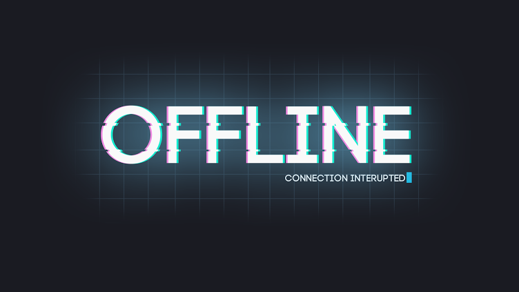

La verdad tras el “Zero-day” en Telegram para Windows y OS X
 |
Hace unos días se dió a conocer a nivel mundial una gran cantidad de noticias acerca de un fallo de tipo 0-day en la aplicación de mensajería Telegram para las plataforma Windows y OS X. La noticia decía lo siguiente:… |
SecHackLabs – Linux Hardening: El init e inicio de servicios.
 |
La mayoría de sistemas operativos vienen con un gran número de servicios que inician automaticamente durante el proceso de arranque. Obviamente, varios de ellos son actualmente importantes para la funcionalidad del sistema, otros son designados con la finalidad de iniciar… |
Mas...
|  |